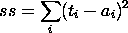
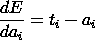
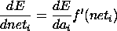
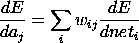
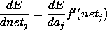

In this phase, a measure of the error or mismatch between the target and the actual output is computed, and the negative of the derivative of the error with respect to the activation and with respect to the net input to each unit is computed, starting at the output layer and passing successively back through successively lower numbers of layers. By default the error measure used is the summed square error:
where the index i runs over all of the output units. The derivative of this with respect to the activation of each output unit is easily computed. We actually use the negative of this derivative, which we call dE/da_i. For output units, this quantity is
We then compute a quantity proportional to the negative derivative of the error measure with respect to the net input to each unit, which is
where f'(net_i) is the slope of the activation function given the net input to the unit.
This quantity is then propagated back to successively lower numbered layers, using the formulas
and

Here subscript i indexes units that receive connections from unit j; we can see these formulas as providing for the backward propagation of error derivative information via the same connections that carry activation forward during the activation phase.